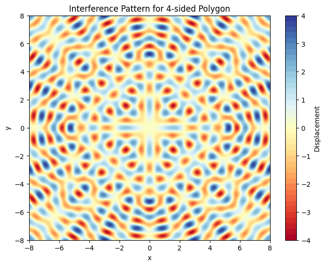
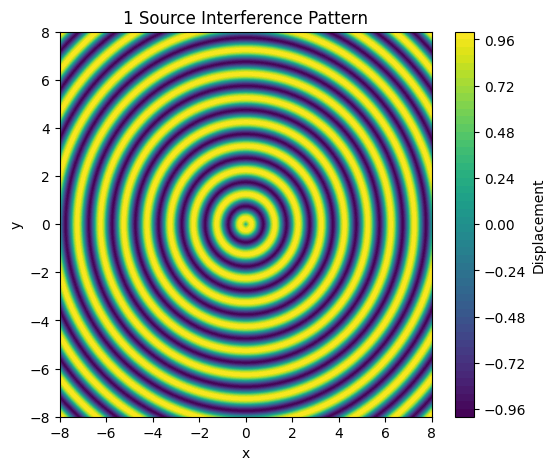
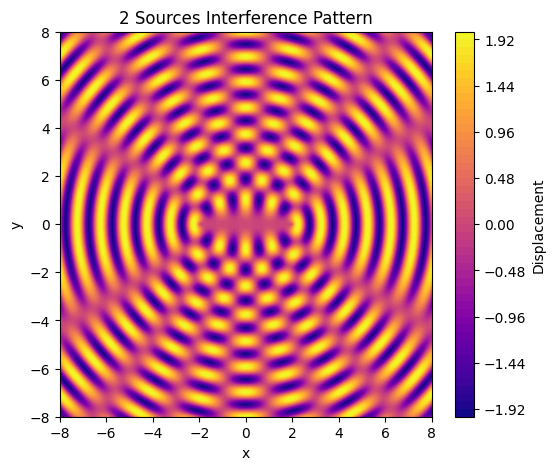
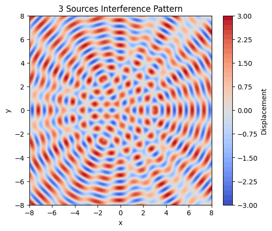
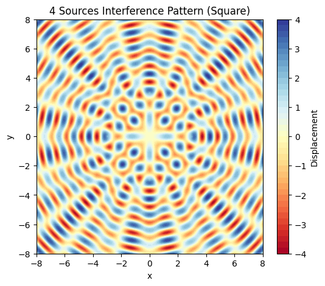

Problem1
Motivation
Wave Interference: Key Concepts
-
Interference Overview
Waves from different sources overlap to form new patterns.
-
Types of Interference
- Constructive: In-phase waves, larger amplitudes.
- Destructive: Out-of-phase waves, reduced amplitudes.
-
Wave Sources
Ripples originate from distinct points (e.g., on water).
Example: Two point sources interact to produce patterns.
-
Interference Patterns
Nodal lines: Areas of wave cancellation (destructive).
Antinodes: Areas of wave amplification (constructive).
Depend on source spacing, wavelength, and phase differences.
-
Phase Relationship
Relative wave phase dictates interference type:
- In phase: Constructive.
- Out of phase: Destructive.
Task
A circular wave on the water surface, emanating from a point source located at (x₀, y₀), can be described by the Single Disturbance equation:
where:
- r is the distance from the source to the point (x, y),
- A is the amplitude of the wave,
- k is the wave number, related to the wavelength (\(\lambda\)),
- ω is the angular frequency, related to the frequency (f),
- t is time,
- φ is the initial phase.
Problem Statement
Your task is to analyze the interference patterns formed on the water surface due to the superposition of waves emitted from point sources placed at the vertices of a chosen regular polygon.
Steps to Follow
- Select a Regular Polygon: Choose a regular polygon (e.g., equilateral triangle, square, regular pentagon).
- Position the Sources: Place point wave sources at the vertices of the selected polygon.
- Wave Equations: Write the equations describing the waves emitted from each source, considering their respective positions.
- Superposition of Waves: Apply the principle of superposition by summing the wave displacements at each point on the water surface:
where N is the number of sources (vertices of the polygon). 5. Analyze Interference Patterns: Examine the resulting displacement D(x, y, t) as a function of position (x, y) and time t. Identify regions of constructive interference (wave amplification) and destructive interference (wave cancellation). 6. Visualization: Present your findings graphically, illustrating the interference patterns for the chosen regular polygon.
Considerations
- Assume all sources emit waves with the same amplitude, wavelength, and frequency.
- The waves are coherent, maintaining a constant phase difference.
- You may use simulation and visualization tools such as Python (with libraries like Matplotlib), or other graphical software to aid in your analysis.
Deliverables
- A Markdown document with a Python script or notebook implementing the simulations.
- A detailed explanation of the interference patterns observed for the chosen regular polygon with the goal of understanding wave superposition.
- Graphical representations of the water surface showing constructive and destructive interference regions.

✅ 1. One Point Source
Interference from a single point source
Description: A single point source generates circular wavefronts radiating outward uniformly. No interference occurs, only basic wave propagation is visible.
import numpy as np
import matplotlib.pyplot as plt
A = 1
lambda_ = 1
k = 2 * np.pi / lambda_
omega = 2 * np.pi
phi = 0
source = (0, 0)
x_vals = np.linspace(-8, 8, 400)
y_vals = np.linspace(-8, 8, 400)
X, Y = np.meshgrid(x_vals, y_vals)
r = np.sqrt((X - source[0])**2 + (Y - source[1])**2)
Z = A * np.sin(k * r + phi)
plt.figure(figsize=(6, 5))
plt.contourf(X, Y, Z, levels=50, cmap='viridis')
plt.title("1 Source Interference Pattern")
plt.xlabel("x")
plt.ylabel("y")
plt.colorbar(label="Displacement")
plt.show()

✅ 2. Two Point Sources
Interference from two coherent point sources
Description: Two coherent sources interfere to produce a classic pattern of alternating constructive and destructive interference — producing nodal and antinodal lines
import numpy as np
import matplotlib.pyplot as plt
A = 1
lambda_ = 1
k = 2 * np.pi / lambda_
phi = 0
sources = [(-2, 0), (2, 0)]
x_vals = np.linspace(-8, 8, 400)
y_vals = np.linspace(-8, 8, 400)
X, Y = np.meshgrid(x_vals, y_vals)
Z = np.zeros_like(X)
for (xs, ys) in sources:
r = np.sqrt((X - xs)**2 + (Y - ys)**2)
Z += A * np.sin(k * r + phi)
plt.figure(figsize=(6, 5))
plt.contourf(X, Y, Z, levels=50, cmap='plasma')
plt.title("2 Sources Interference Pattern")
plt.xlabel("x")
plt.ylabel("y")
plt.colorbar(label="Displacement")
plt.show()

✅ 3. Three Point Sources (Equilateral Triangle)
Interference from three sources in an equilateral triangle
Description: Three sources arranged in an equilateral triangle generate a more complex interference pattern with symmetry but additional regions of chaotic interaction.
import numpy as np
import matplotlib.pyplot as plt
A = 1
lambda_ = 1
k = 2 * np.pi / lambda_
phi = 0
radius = 3
angles = np.linspace(0, 2 * np.pi, 3, endpoint=False)
sources = [(radius * np.cos(a), radius * np.sin(a)) for a in angles]
x_vals = np.linspace(-8, 8, 400)
y_vals = np.linspace(-8, 8, 400)
X, Y = np.meshgrid(x_vals, y_vals)
Z = np.zeros_like(X)
for (xs, ys) in sources:
r = np.sqrt((X - xs)**2 + (Y - ys)**2)
Z += A * np.sin(k * r + phi)
plt.figure(figsize=(6, 5))
plt.contourf(X, Y, Z, levels=50, cmap='coolwarm')
plt.title("3 Sources Interference Pattern")
plt.xlabel("x")
plt.ylabel("y")
plt.colorbar(label="Displacement")
plt.show()

✅ 4. Four Point Sources (Square)
Interference from four sources at the corners of a square
Description: Four sources placed at the corners of a square form an interference pattern exhibiting strong symmetry, with clear grid-like nodal and antinodal regions.
import numpy as np
import matplotlib.pyplot as plt
A = 1
lambda_ = 1
k = 2 * np.pi / lambda_
phi = 0
radius = 3
angles = np.linspace(0, 2 * np.pi, 4, endpoint=False)
sources = [(radius * np.cos(a), radius * np.sin(a)) for a in angles]
x_vals = np.linspace(-8, 8, 400)
y_vals = np.linspace(-8, 8, 400)
X, Y = np.meshgrid(x_vals, y_vals)
Z = np.zeros_like(X)
for (xs, ys) in sources:
r = np.sqrt((X - xs)**2 + (Y - ys)**2)
Z += A * np.sin(k * r + phi)
plt.figure(figsize=(6, 5))
plt.contourf(X, Y, Z, levels=50, cmap='RdYlBu')
plt.title("4 Sources Interference Pattern (Square)")
plt.xlabel("x")
plt.ylabel("y")
plt.colorbar(label="Displacement")
plt.show()
